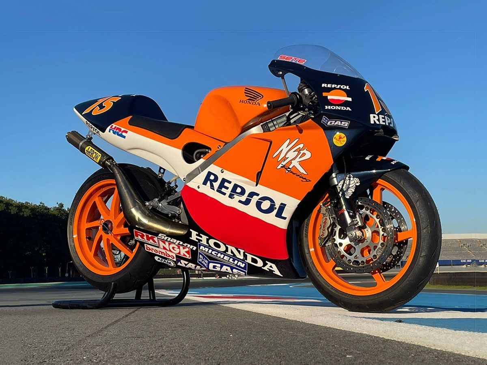
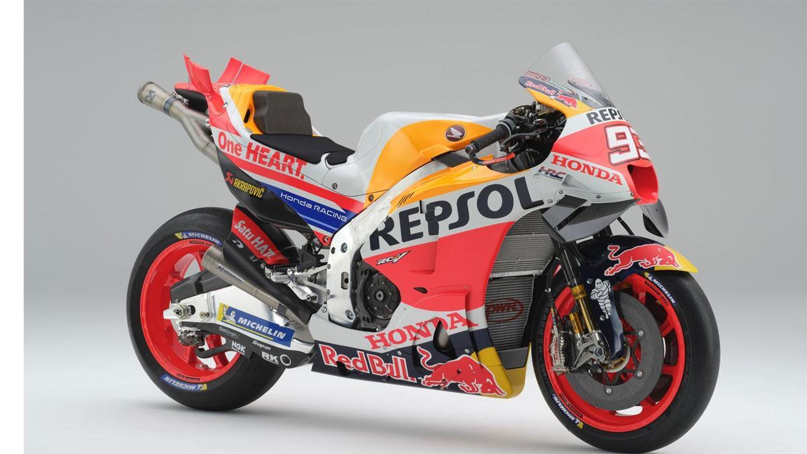

Breve Historia
El campeonato del mundo de motociclismo cuenta con varias categorías, pero la categoría reina por excelencia siempre ha sido la Moto GP. La primera edición de esta categoría se corrió en el año 1949, y fue ganada por el piloto británico Leslie Graham.
A lo largo de los años la categoría reina del motociclismo ha sufrido importantes cambios a nivel de reglamento, tal vez uno de los más relevantes y recordados fue el cambio de los motores de 500cc y dos tiempos a los motores de cuatro tiempos y 999cc. Este cambio de clindrada fue sucedido por otros que hicieron que las motos se hicieran en un principio más pequeñas en el año 2007 con el cambio a los motores de 800cc y más tarde de nuevo se permitieron los motores de más cilindrada con motos de hasta 1000cc.
Figuras Importantes
Al ser desde su concepción la categoría máxima en el mundo del motociclismo es lógico que en sus campeonatos y carreras hallan participado algunos de los más importantes pilotos de la historia.
Algunos ejemplos de lo anterior son Valentino Rossi con su número 46, o el español y ocho veces campeón mundial (en varias categorias ya que en Moto GP "solo" ha logrado seis títulos mundiales) Marc Marquez con su número 98, cabe recalcar que entre estos dos pilotos existió una gran rivalidad que pasó a la historia dividiendo a la afición notablemente.
Las Motos más Icónicas
Como era de esperar en esta categoría ha habido auténticas maravillas de máquinas, personalmente mis favoritas son las siguientes:
1. Honda NSR 500. Esta fue tal vez la moto más exitosa del campeonato mundial de motociclismo habiendo sido 10 veces campeona mundial con sus impresonantes 165cv dejó atrás a su predecesora la honda NS500.
2. Honda RC213V. La moto de Marc Marquez, esta le llevó a ganar sus seis flamantes campeonatos de Moto GP, lo que la hace igualar la cifra de victorias granjeadas de la Honda NS500.
